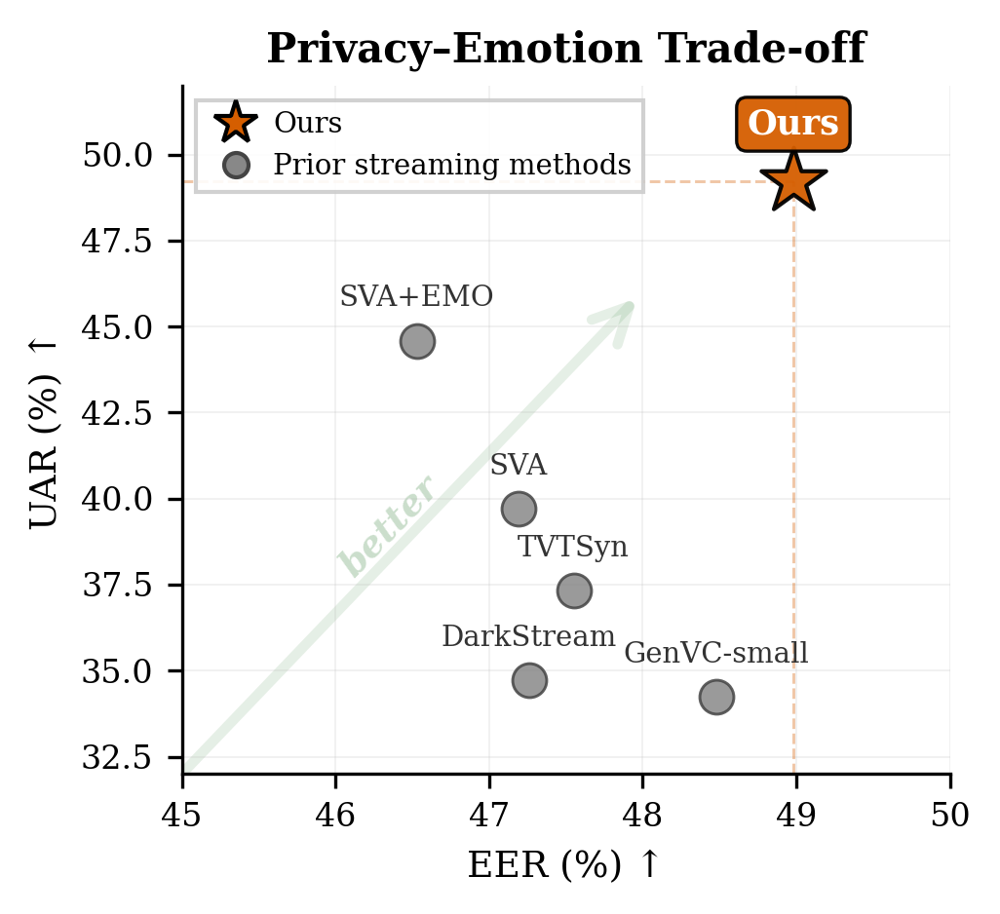
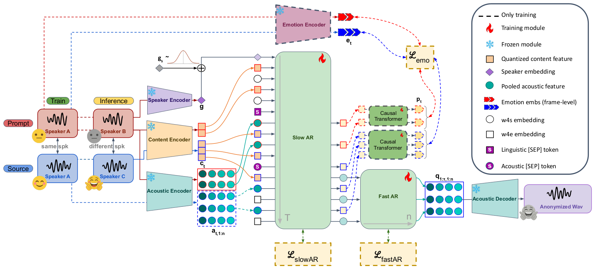

Anonymous submission to Interspeech 2026
We address the challenge of preserving emotional content in streaming speaker anonymization (SA). Neural audio codec language models trained for audio continuation tend to degrade source emotion: content tokens discard emotional information, and the model defaults to dominant acoustic patterns rather than preserving paralinguistic attributes. We propose supervised finetuning with neutral-emotion utterance pairs from the same speaker, combined with frame-level emotion distillation on acoustic token hidden states. All modifications are confined to finetuning, which takes less than 2 hours on 4 GPUs and adds zero inference latency overhead, while maintaining a competitive 180ms streaming latency. On the VoicePrivacy 2024 protocol, our approach achieves a 49.2% UAR (emotion preservation) with 5.77% WER (intelligibility), a +24% relative UAR improvement over the baseline (39.7%→49.2%) and +10% over the emotion-prompt variant, while maintaining strong privacy (EER 49.0%).
Index Terms: speaker anonymization, emotion preservation, streaming speech processing, knowledge distillation

Figure 1: Privacy-emotion trade-off for streaming speaker anonymization methods. Our method (orange star) compared to prior streaming methods (triangles).

Figure 2: Training and inference configurations. Training: prompt and source share the same speaker but differ in emotion, forcing the model to generate emotional output from source content rather than copying prompt-specific patterns. Frame-level emotion distillation (ℒemo, dashed) on Slow AR acoustic hidden states provides additional learning signal. Inference: a neutral utterance from the target anonymous speaker conceals source identity while the finetuned model preserves source emotion; no latency is added over the baseline.
Supervised Finetuning (SFT) — Train on neutral-emotion utterance pairs from the same speaker, combined with frame-level emotion distillation on acoustic token hidden states. All modifications are confined to finetuning.
Acoustic Emotion Distillation — Frame-level distillation from a pretrained emotion extractor into acoustic hidden states. The acoustic branch provides cleaner gradient flow, avoiding interference with content supervision on the semantic branch.
Zero Inference Overhead — At inference, the distillation head and Emotion Encoder are removed; the model operates with the same architecture and latency as the baseline.
| Method | Type | WER ↓ | UAR ↑ | EER-L ↑ | EER-S ↑ |
|---|---|---|---|---|---|
| Original | – | 1.83 | – | 5.16 | – |
| EASY [5] | Offline | 2.70 | 63.81 | – | 45.89 |
| GenVC-small [12] | Semi | 8.20 | 34.23 | 48.48 | 15.94 |
| SLT24 [17] | Online | 5.70 | 57.00 | 31.40 | 10.12 |
| DarkStream [18] | Online | 8.75 | 34.73 | 47.26 | 21.83 |
| TVTSyn [11] | Online | 5.35 | 37.32 | 47.55 | 14.57 |
| StreamVoiceAnon [4] vctk-1fix |
Online | 4.54 | 39.72 | 47.19 | 15.92 |
| crema-emo-4rnd | Online | 6.59 | 44.59 | 46.53 | 18.63 |
| Ours pool-distill |
Online | 5.08 | 46.30 | 48.62 | 18.32 |
| frame-distill | Online | 5.77 | 49.22 | 48.98 | 18.30 |
Table 1: Comparison with prior methods. ↑/↓: higher/lower is better. Bold: best streaming result; underline: second best. SLT24 is grayed out due to insufficient privacy (EER-L < 40%). Our two variants correspond to Exp4 (pool-distill) and Exp7 (frame-distill) in the ablation study (Table 2).
The most dramatic improvement occurs for "sad": from 8.0% (baseline) to 42.6% (ours), a +431% relative gain. The emotion-prompt baseline nearly destroys sadness recognition (8% UAR, near random for 4 classes). Our method recovers sad emotion to 42.6% UAR, demonstrating that acoustic-level distillation captures the subtle prosodic cues that prompt-based approaches miss entirely.
3 utterances per emotion, 6 methods each. Click a waveform to play, or use "Play all" to hear methods sequentially.
| Model | Components | WER ↓ | Emotion ↑ | Privacy ↑ | ||||||||||
|---|---|---|---|---|---|---|---|---|---|---|---|---|---|---|
| FT-CREMA | Neu-Emo | [SEP] | StatPool | Causal | Distill | Average | Ang | Hap | Neu | Sad | EER-L | EER-S | ||
| Baseline | – | 4.54 | 39.7 | 35.8 | 81.9 | 33.1 | 8.0 | 47.19 | 15.92 | |||||
| Exp1 | ✓ | – | 5.00 | 41.1 | 36.3 | 79.6 | 35.5 | 13.2 | 45.70 | 14.88 | ||||
| Exp2 | ✓ | ✓ | – | 5.16 | 45.3 | 35.3 | 75.9 | 48.2 | 21.7 | 47.31 | 16.73 | |||
| Exp3 | ✓ | ✓ | ✓ | – | 5.25 | 47.4 | 34.8 | 72.9 | 50.7 | 31.2 | 47.46 | 16.53 | ||
| Exp4 | ✓ | ✓ | ✓ | ✓ | – | 5.08 | 46.3 | 40.9 | 75.1 | 44.2 | 25.0 | 48.62 | 18.32 | |
| Exp5 | ✓ | ✓ | ✓ | ✓ | – | 5.32 | 48.5 | 40.3 | 65.2 | 53.6 | 34.8 | 48.19 | 16.78 | |
| Exp6 | ✓ | ✓ | ✓ | ✓ | Sem | 6.23 | 48.2 | 48.7 | 66.7 | 49.7 | 27.7 | 47.93 | 17.10 | |
| Exp7 | ✓ | ✓ | ✓ | ✓ | Aco | 5.77 | 49.2 | 38.8 | 62.8 | 52.7 | 42.6 | 48.98 | 18.30 | |
Table 2: Ablation study. ✓ indicates active components. StatPool/Causal: aggregation approach. Distill: distillation target branch (Sem = semantic, Aco = acoustic; – = acoustic by default). Bold: best among Exp1–7; underline: second best. All metrics on IEMOCAP following VoicePrivacy 2024 protocol.
Compare key ablation configurations on sad utterances to hear the incremental effect of each component.